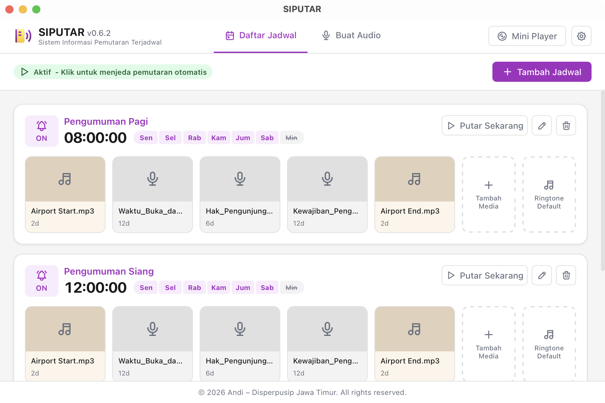
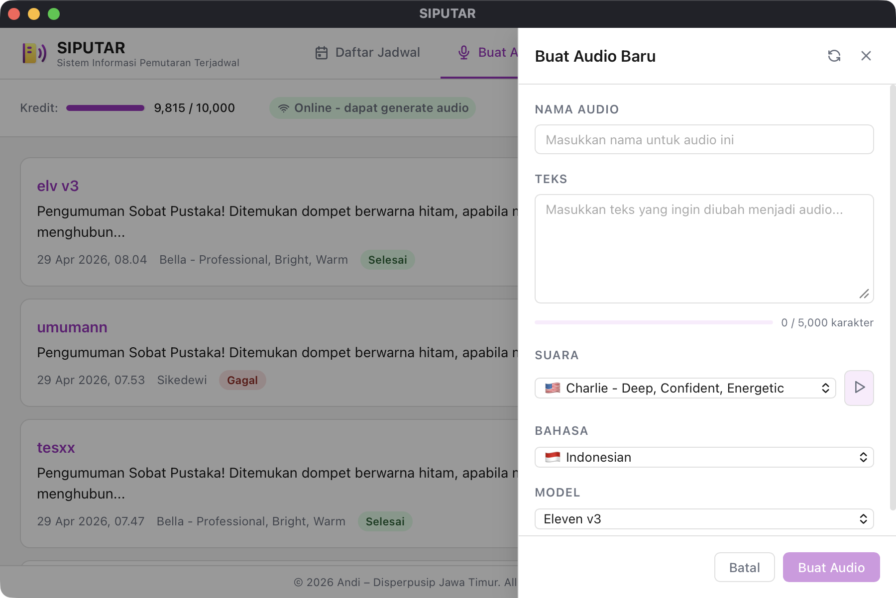
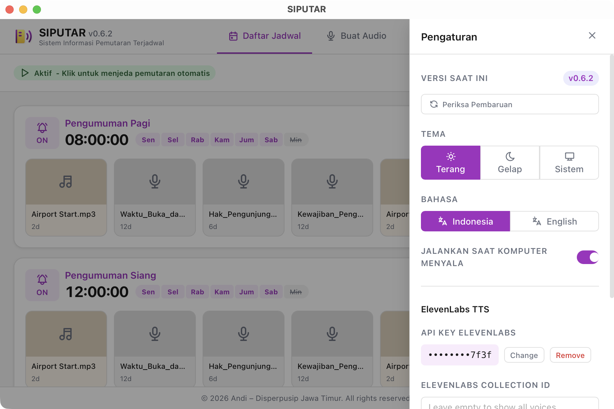

Sistem Informasi Pemutaran Terjadwal — a powerful desktop app for scheduling and playing multimedia announcements with AI-powered Text-to-Speech.
Free & open-source · macOS · Windows · Linux
From schedule management to AI-powered voice generation — all in one app.
Create time-based playback schedules with day-of-week control, loop settings, and per-file volume. Schedules auto-trigger at the configured time.
Play audio files (MP3, WAV, FLAC) and video files. Build playlists with drag-and-drop ordering and individual loop counts.
Generate professional voice announcements with customizable stability, similarity, and speed. Supports multiple voices and languages.
Floating always-on-top player window shows current media, status, and playlist. Drag it anywhere for convenient monitoring.
API keys are stored in your system keychain — macOS Keychain, Windows Credential Manager, or Linux Secret Service.
Built with Tauri & SvelteKit. Runs natively on macOS, Windows, and Linux with a small footprint and fast startup.
A polished, modern interface designed for daily use.



Free and open-source. Download the latest release below.
1. Open the .dmg and drag to Applications
2. Run in Terminal to allow unsigned app:
xattr -cr "/Applications/SIPUTAR.app"
3. Double-click to launch
1. Run the .msi installer
2. If SmartScreen appears, click "More info" → "Run anyway"
3. Follow the installation wizard
xattr -cr "/Applications/SIPUTAR.app"